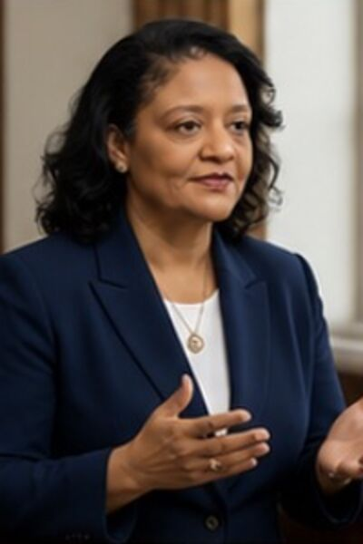

Leadership team
AFSV VRC is led by a dedicated team of entrepreneurs, community builders, and visionaries committed to transforming youth sports, education, and community development in Canada and beyond.
Martin Michael Victor Lashley
Founder, Chairman & Interim CEO — Athletes & Fans Sports Village Holding Company Limited (AFSVHCL)
Founder, Chairman & CEO — AFSV VRC Global Development Group Limited
Founded AFSV VRC on a singular belief: sport can transform communities when combined with education, technology and opportunity.
“We are not building a sports facility. We are building an ecosystem — one that will change the trajectory of thousands of young lives and strengthen communities across Canada and the world.”
Martin Lashley founded Athletes & Fans Sports Village Holding Company Limited (AFSVHCL™) and AFSV VRC Global Development Group Limited with a singular belief: sport can transform communities when combined with education, technology, and opportunity.
Recognizing the challenges athletes face in Canada's climate, Martin envisioned a network of high-performance indoor sports environments capable of supporting year-round training while simultaneously delivering mentorship, academic support, and career pathways for young people.
That vision evolved into the AFSV VRC ecosystem, an integrated platform combining sports science, education programs, esports engagement, and community participation.
The Whitby AI-Driven Sports Village project represents the first step toward building a national network of multi-sport dome facilities designed to serve athletes, families, and communities across Canada.
Martin Michael Victor Lashley is the Founder, Chairman & Chief Executive Officer of AFSV VRC Global Development Group Limited, a Canadian-based sports infrastructure and youth development company building an integrated ecosystem that combines elite sport, education support, sports science, esports, and community engagement. He is also the Founder, Chairman & Interim CEO of Athletes & Fans Sports Village Holding Company Limited (AFSVHCL).
Vinai Charran
Deputy Chairman & Deputy CEO — AFSV VRC Global Development Group Limited
Building a legacy. Inspiring generations.
Leads strategic investment and capital growth, drawing on decades building businesses across retail, education, publishing and trade.
“I believe in the power of sports and education to transform lives and build stronger communities. My investment in AFSV VRC Global Development Group Limited is an investment in our youth and in a better future for generations to come.”
Vinai Charran serves as Deputy Chairman and Deputy CEO of AFSV VRC Global Development Group Limited, and plays an essential role in supporting the organization's strategic growth and capital development initiatives.
A successful entrepreneur and international businessman, Vinai brings extensive experience in investment strategy, business development, and global commercial operations. His leadership and financial support help advance the Athletes & Fans Sports Village vision of building a next-generation global sports, education, and community development ecosystem.
Vinai is the Founder and CEO of Charran's Group of Companies, a diversified business enterprise with operations spanning retail, education, publishing, and international trade. Through decades of entrepreneurial leadership, he has established a reputation for identifying innovative opportunities and building sustainable business platforms that deliver long-term value.
As Deputy Chairman and Deputy CEO, Vinai provides strategic and investment leadership and supports the development of major initiatives, including the proposed Whitby AI-Driven Sports Village pilot project in Ontario, Canada, intended as the foundation for a broader national and international rollout of integrated sports, education, and community infrastructure.
Beyond his business accomplishments, Vinai is deeply committed to initiatives that promote education, youth development, and community empowerment. His investment in the Athletes & Fans Sports Village platform reflects his belief that sports, education, and mentorship can transform lives and create lasting opportunities for future generations.
Through his role with AFSV VRC Global Development Group Limited, Vinai continues to help drive the development of a globally scalable sports and education platform designed to inspire athletes, empower communities, and foster innovation in youth development worldwide.
Natalie Sutherland-Lashley
Co-Chairperson & Corporate Secretary
Guides governance, corporate structure and the strategic relationships behind AFSVHCL’s expansion across Canada and the Caribbean.
Natalie Sutherland-Lashley serves as Co-Chairperson and Corporate Secretary of Athletes & Fans Sports Village Holding Company Limited (AFSVHCL), where she plays a critical role in the governance, strategic development, and international positioning of the organization.
With a strong background in business administration, organizational leadership, and corporate governance, Natalie helps guide the operational structure and long-term strategy behind the Athletes & Fans Sports Village vision. Her work supports the company's mission of building a next-generation global sports ecosystem that integrates elite athletic development, education, wellness, esports, and community inclusion.
As Co-Chairperson, Natalie works closely with the executive leadership team to ensure that AFSVHCL maintains the highest standards of corporate accountability, transparency, and stakeholder engagement. She is responsible for coordinating board governance, overseeing corporate documentation, and helping manage the strategic relationships that underpin the company's expansion across Canada, the Caribbean, and the broader international sports community.
Natalie is also a passionate advocate for the project's social impact mission, particularly its commitment to creating opportunities for youth and families while integrating education and support programs for neurodivergent children and individuals with learning differences.
Through her work with AFSVHCL, Natalie continues to contribute to the development of a transformational sports and education platform designed to inspire the next generation of athletes, innovators, and community leaders.
Michelle Lashley
Chief Operating Officer (COO)
- Strategic leadership

Operational excellence- Program execution
Building a next-generation global sports ecosystem that empowers athletes, inspires communities, and transforms lives through sports, education, and innovation.
Turns the vision into an operating ecosystem — leading operations, partnerships and program delivery across Canada, the Caribbean and the US.
“We operate with purpose, execute with excellence, and serve with heart to create opportunities that change lives and strengthen communities.”
Michelle Lashley serves as the Chief Operating Officer of Athletes & Fans Sports Village Holding Company Limited (AFSVHCL), where she oversees the operational execution of the company's global sports, education, and community development initiatives.
With extensive experience in organizational management, program development, and strategic implementation, Michelle plays a pivotal role in transforming the Athletes & Fans Sports Village vision into a fully operational ecosystem. She leads the coordination of internal operations, strategic partnerships, and program delivery across the company's expanding initiatives in Canada, the Caribbean, and the United States.
As COO, Michelle is responsible for ensuring that the organization's core pillars — elite athletic development, education, wellness, esports innovation, and community inclusion — are executed efficiently and sustainably. She works closely with the executive leadership team to implement operational systems, manage key stakeholder relationships, and ensure the successful rollout of major projects including the Whitby AI-Driven Sports Village pilot in Ontario and related international initiatives.
Michelle is also the Founder of MLMSR Mentorship LLC, an education and mentorship organization that supports the Athletes & Fans Sports Village platform through academic programming, mentorship initiatives, and specialized education support for neurodivergent youth, including individuals on the autism spectrum and those with ADHD and dyslexia.
Her leadership strengthens the organization's ability to deliver a next-generation sports infrastructure model that integrates high-performance athletics with education, technology, and community impact.
Through her role at AFSVHCL, Michelle continues to help shape a transformative platform designed to empower athletes, support families, and build sustainable sports communities around the world.
Clyne K. Rodriguez
Vice President, Global Business Development & Sponsorship — AFSV VRC Global Development Group Limited
Supports the Group’s international growth through corporate partnerships, sponsorship development, strategic outreach and stakeholder engagement.
Clyne is an international business development professional and entrepreneur with a diverse background in strategic partnerships, international market expansion, regional management, and corporate relationship development.
His career spans entrepreneurship, tourism, and international business development, combining practical commercial experience with a degree in Marketing and a Master of Business Administration (MBA).
Having held senior management positions, including Business Development Manager for Latin American markets, Regional Manager for the Caribbean, and Country Manager for an international company, Clyne brings valuable experience in developing markets, cultivating strategic relationships, and identifying opportunities for sustainable business growth.
Fluent in Spanish and experienced in engaging Caribbean and Latin American markets, Clyne brings a cross-cultural perspective to international business development. His background in tourism and commercial enterprise has further strengthened his ability to connect people, organisations, and opportunities across diverse markets.
In his consulting capacity as Vice President, Global Business Development & Sponsorship at AFSV VRC Global Development Group Limited, Clyne supports the Group’s international growth through corporate partnerships, sponsorship development, strategic outreach, and stakeholder engagement. His portfolio includes partnership and sponsorship engagement associated with the GAISB AI World Summit 2027, alongside initiatives connecting business, sport, education, and innovation.
Driven by an entrepreneurial mindset and a commitment to building meaningful professional relationships, Clyne works closely with the leadership team to develop strategic connections that support AFSV VRC’s vision of creating opportunities and strengthening communities through sport, education, and innovation.